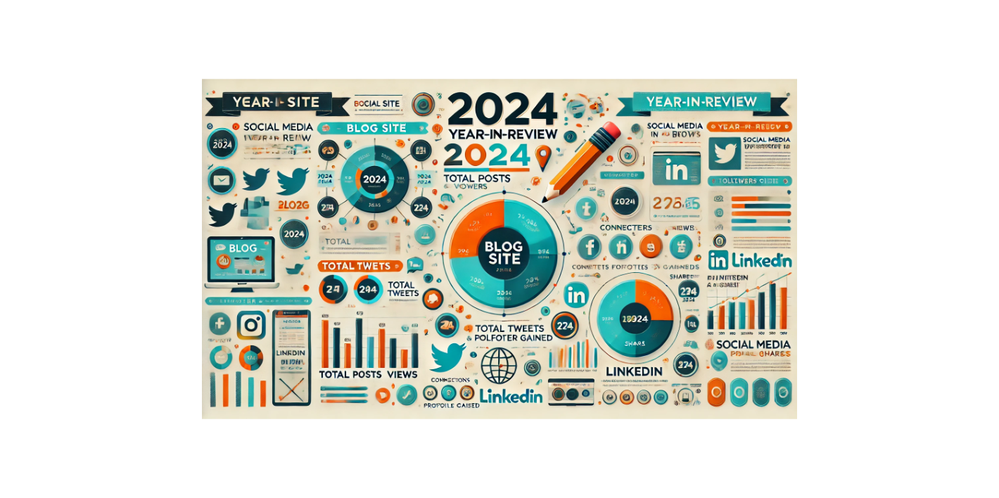

Top Blog Highlights of 2024

Most-Read Blog Posts of 2024
I’m astonished by how many people have read my blogs—especially since I was certain only my dog cared. – Unknown
2024 Stats Recap 📊
Blog Site:
✨ 69,000+ Views
LinkedIn:
🔥 89,000+ Impressions
X (Twitter):
⚡ 33,000+ Impressions
Thank you all for the incredible support this year!
Stay tuned for more insights, tips, and content in 2025!
Surprising Insights from Blogging
I'm always surprised by which blog posts resonate the most with readers. Some of my top-performing posts started as simple notes to myself—a personal Wiki to document processes I didn’t want to forget.
Ironically, those "just-for-me" posts often end up being the most popular. It turns out that if something was challenging enough for me to document, others are probably facing the same challenge and searching for answers too.
So, if you're ever wondering what to write about, start with what you need to remember. Chances are, someone else will find it just as helpful!
2024 | Top 20 Blog Posts:
1. VMware Aria Automation and Ansible Integration
2. VCF Operations | Ideas for Practical and Effective Dashboards
3. Automation Code Creation with ollama
4. VMware Aria Operations | Use vCenter TAGS/Custom Groups/Super Metrics to get VM Details
5. VMware Aria Operations | Servicenow | Management Pack
6. VMware Aria Automation | How to send messages and updates
7. Schedule RVTools Data Export
8. VCF Automation Deployments | Overview Tab
9. VMware Aria Operations | RVTools Dashboard
10. VMware Explore 2024
11. Aria Operations | vCenter Observability
12. VMware Aria Automation | Working with Windows Server Drives
13. Rest API calls in VMware Aria Automation with PowerShell
14. VCF Operations Dashboard | ESXi Tiered Memory
15. VMware Aria Automation | Custom Form with ChatGPT
16. VMware Aria Automation and SaltStack Config Resource
17. VMware Explore 2024 | My Insights, Session Recording Links and PICs
18. VMware Aria Automation Orchestrator | Active Directory OUs
19. VCF Operations for Logs | How to use with Automation Scripts
20. VMware Aria Automation | Options for CPU|Memory values
2025 Tech Goals and Recommendations!
Expand Your Automation Skills
- Step outside your comfort zone—explore new areas of automation. Challenge yourself to learn something different and level up your expertise!
Explore the VCF Management Pack Builder
- Take your VMware Cloud Foundation (VCF) Operations to the next level by leveraging Management Packs. They can significantly enhance monitoring and automation capabilities.
Get Hands-On with VCF
- Don't have VCF in production? No problem! Set up a lab environment and start exploring the product to gain practical experience.
Engage with the vCommunity
- Share what you’ve learned with others! Your insights could help someone facing similar challenges.
Present Your Work
- Never presented before? Make 2025 the year you showcase your automation and monitoring achievements. Start small—join a local VMUG or submit for a VMware Explore session and share your knowledge!
If you found this blog article helpful and it assisted you, consider buying me a coffee to kickstart my day.